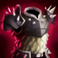

<
Welcome to patch 1.5!
>
Release 18/02/2019 8:37:01 PM
new
True damage
True damage is a new form of damage that ignores target's armor and damage reduction
If true damage critical strikes, it appears as a white critical strike icon instead of orange
new
Blade of the ruined King
new
UNIQUE PASSIVE: Grants +40 attack damage and +12% life steal
new
UNIQUE PASSIVE: Damaging an enemy applies 8% of their
current
health as bonus physical damage
Iceborn Gauntlet
Iceborn Gauntlet's immunity passive was too powerful and allowed players to passe multiple level without taking any damage
PASSIVE: immunity duration
10 seconds
3 ( +1 per level) seconds
updated

Thornmail
Thornmail is used in tanky builds and was too powerful against squishies. We're making it dealing reduced
true
damage to reduce its impact against squishies while increasing its power against tanks
PASSIVE: Damage reflected
20%
Physical damage
10%
true damage
Bug fixes and other changes
new
DEATH RECAP! You can now view the details of the damage taken after you die
new
You can now click on the monsters or the player icons in the minimap to view their HUD and items
Fixed bug where standing on a platform for a log time with make you fall down
Fixed bug that prevent player from jumping while on platformes
Fixed bug that allowed player to accumulate infinite up force if hit maximum high and kept jumping
Fixed bug where critical strike sound will play too much and cause game crash
Fixed bug where player's energy and health won't regenerate if the player's HUD isn't showing
Fixed bug where player's energy and health could exceed 100% if the player's HUD isn't showing
Fixed bug where dragging the item shop to the edge of the screen will allow item's text and images to get out of the window
Fixed bug where Tear of the Goddess would quadruble your energy regenration instead if doubling it